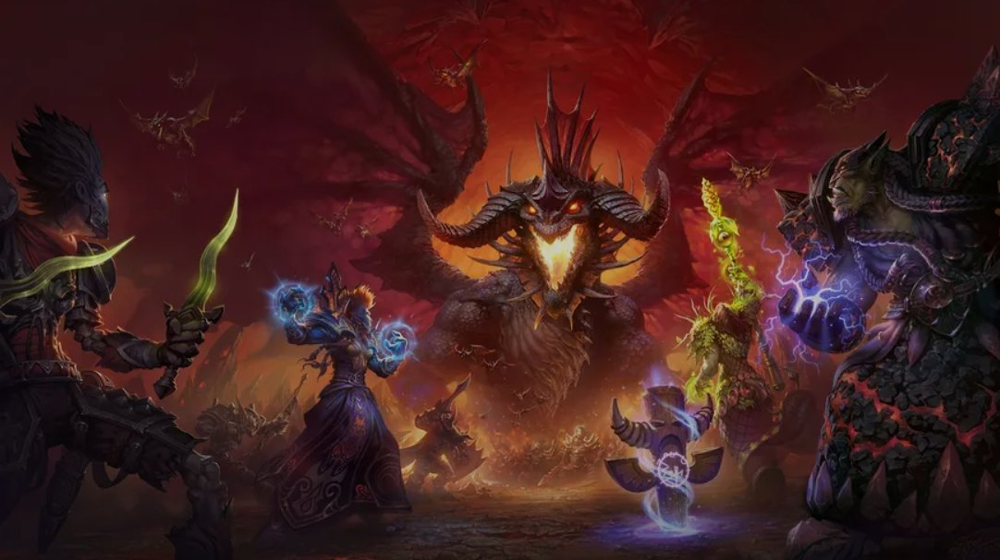

News › Repaire des Noiregueules
Repaire des Noiregueules : Blizzard reprend l'or des gros farmeurs
18 novembre 2026
Le week-end dernier, un groupe de monstres du Repaire des Noiregueules donnait beaucoup trop d'or. Certains streamers ont amassé des milliers de pièces. Blizzard a réagi.

La faille
- Au Repaire des Noiregueules (« Blackmaw Hold »), le donjon de niveau 55-60 d'Azshara, un groupe de monstres non élites lâchait par erreur tout le butin d'un monstre élite.
- Le farm rapportait plus de 100 pièces d'or par heure. Certains streamers ont affiché 4 000 à 5 000 po.
- Le problème a été corrigé tôt le lundi 16 novembre.
La réponse de Blizzard
- Lundi 16 : les comptes concernés ont vu leur économie bloquée.
- Mardi 17 : Blizzard a annoncé le retrait de l'or et des suspensions pour les plus gros abus, soit « quelques centaines de joueurs » dans le monde.
- Bonne nouvelle pour la plupart des joueurs : ceux qui ont fait le donjon quelques fois et profité du butin n'ont rien fait de mal, selon Blizzard. Seuls sont visés ceux qui ont compris que c'était une erreur et ont farmé ce groupe pendant des heures.
- Blizzard n'a donné ni la durée des suspensions ni le sort des objets achetés avec cet or.
La leçon : si un butin paraît trop beau pour être vrai, mieux vaut ne pas en abuser. Blizzard surveille de près l'économie de Forever.
Au passage : les chiffres du lancement
Blizzard a aussi publié de nouvelles statistiques depuis la sortie de Forever :
- 15,2 millions de personnages créés ;
- 1,48 milliard de quêtes terminées ;
- 9,8 milliards d'ennemis vaincus ;
- 197 millions de morts de joueurs, et l'Archimage Arugal (donjon d'Ombrecroc) est le boss le plus meurtrier.
Selon Holly Longdale, Forever compte le plus grand nombre de joueurs par semaine de toute la franchise depuis 15 ans.
Sources : Kami Labs, d'après le message de Kaivax sur le forum Blizzard du 17 novembre 2026 ; JudgeHype pour les statistiques.